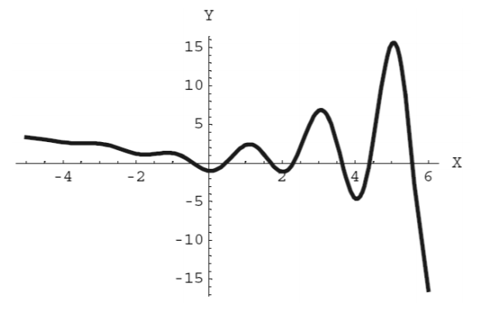
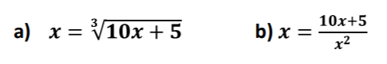

Ejercicios Propuestos
-
f(x)=ln(x2+1)-ex/2cos(πx)=0 Tiene una cantidad infinita de raíces, graficando en el intervalo [-5,6] se tiene:
Se quiere emplear el método de la bisección para encontrar una solución aproximada de la primera raíz de la ecuación f(x)=0 , en el intervalo [0.1, 0.5], con una exactitud de 10-2
-
Aproximar la unica raiz real r de la siguiente funcion polinomica sabiendo que -5≤r≤5
f(x)=ln(x5)-x2+1
(a) Determinar el numero de interaciones y una cota de error(b) Se quiere emplear el método de la bisección para encontrar una solución aproximada de la primera raíz de la ecuación f(x)=0 , en el intervalo [0.1, 0.5], con una exactitud de 10-2
-
Aplicando el metodo de biseccion para: f(x)=cos(x)-x
(a) Calcula una cota de error para la fase 10.(b) Calcula el número de pasos necesarios para aproximar la solución con 4
- Hallar la unica raíz real de f(x) = senx - coscx + 1 ; con xI=0.5, xD=0.7 y con un error admisible de 10-5

- Usar el método de la regla falsa para aproximar la raíz de f(x)=e-x-lnx , comenzando en el intervalo [1,2] y hasta que |Ea < 1%|
- Hallar la unica raíz real de f(x) = senx - coscx + 1 ; con xI=0.5, xD=0.7 y con un error admisible de 10-5
Comparar con el numero de iteraciones obtenido al resolverlo con el metodo de falsa posicion normal
- Usar el método de la regla falsa para aproximar la raíz de f(x)=e-x-lnx , comenzando en el intervalo [1,2] y hasta que |Ea| < 1%
- Usar el método de la regla falsa modificada para aproximar la raíz de f(x)=e-x-lnx , comenzando en el intervalo [1,2] y hasta que |Ea <1%|
-
f(x)=x3-10x-5 Despejando x, se tienen las siguientes ecuaciones de la forma x=g(x)
Calcule la raíz por el método de punto fijo, tomando en cuenta el criterio |g'(x)| <1 y el valor inicial x0=1 , en ambos casos, y determinar cual ecuación converge a una raíz de f(x)
-
Usar el metodo de iteracion de punto fijo para aproximar la raiz de : f(x)=cos(x)-x
Para x0 = 0 y hasta que |Ea| < 1%
-
f(x)=ln(x2+1)-ex/2cos(πx)=0 Tiene una cantidad infinita de raíces, graficando en el intervalo [-5,6] se tiene:
Aproximar mediante el método de Newton-Raphson la raíz de f(x)=0, tomando como valor inicial x0=0.6, con una exactitud de 10-5-2
-
Mediante el metodo de Newton-Raphson, encuentre (10)1/2 con una presicion de 4 cifras decimales
-
Resuelve la siguiente ecuación xlogx-10=0 por el método de la secante
-
Usar el metodo de la secante para aproximar la raiz de f(x) = actan(x)-2x+1
Comenzando con x0=0 y x1=1 y hasta que |Ea| < 1%